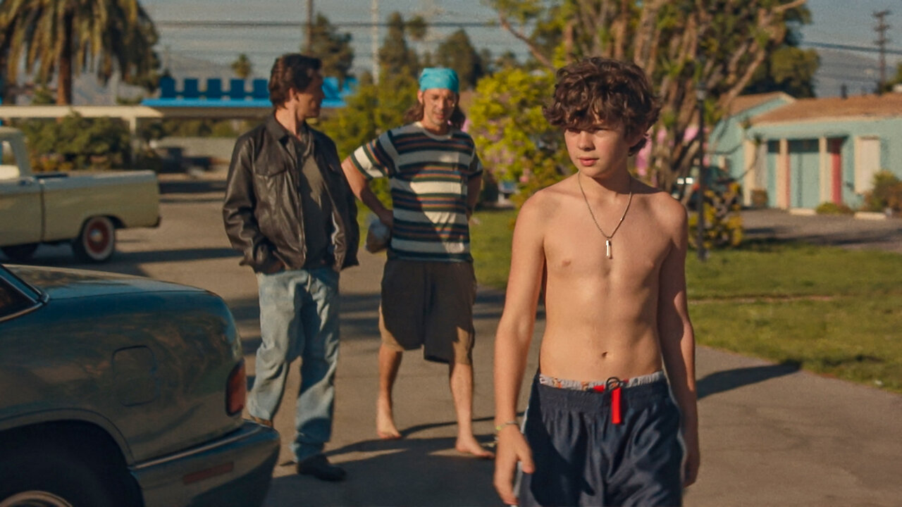
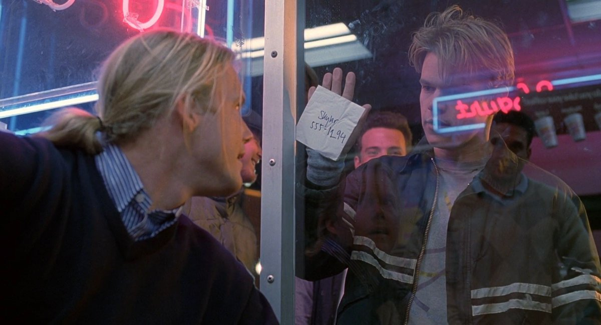
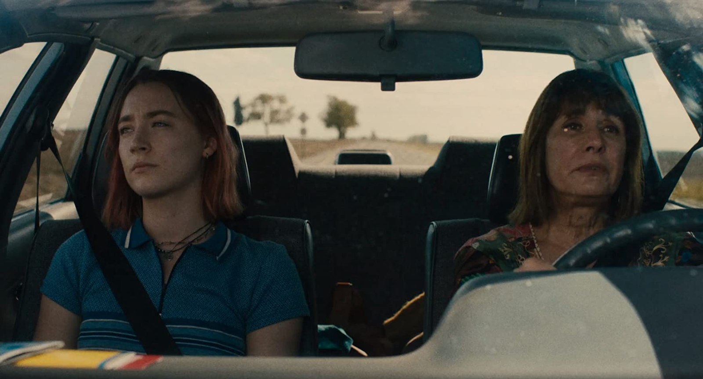
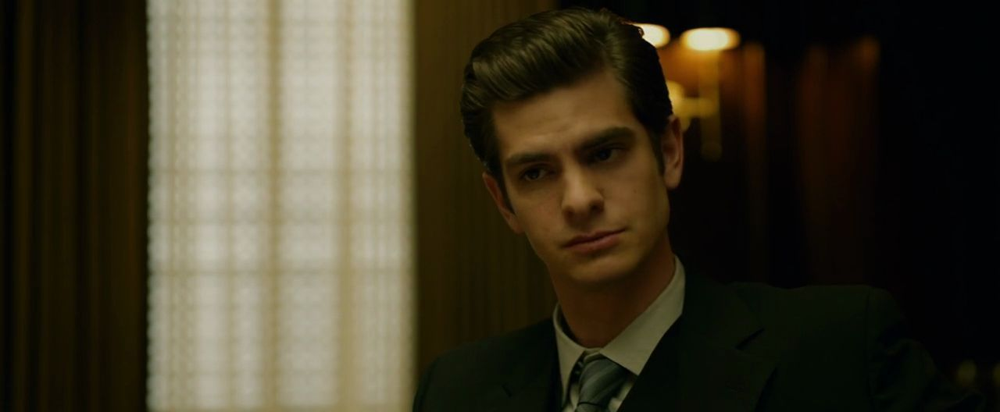
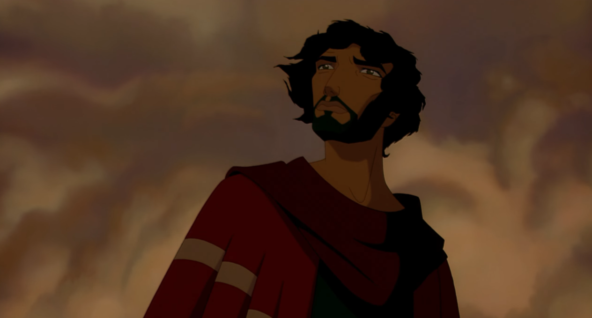
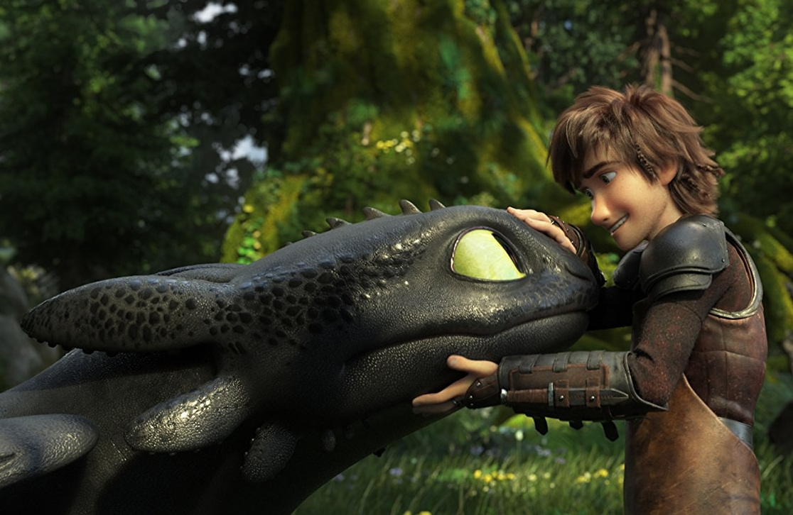
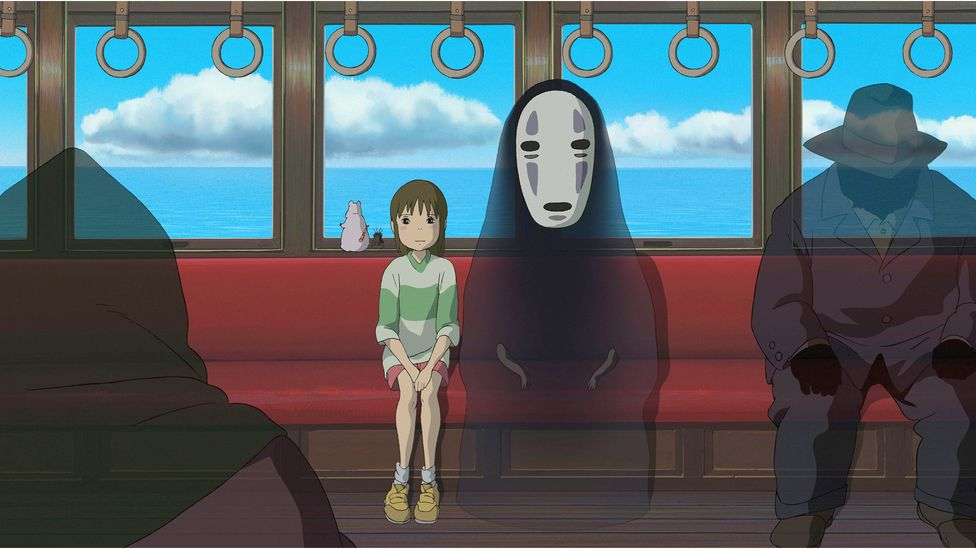
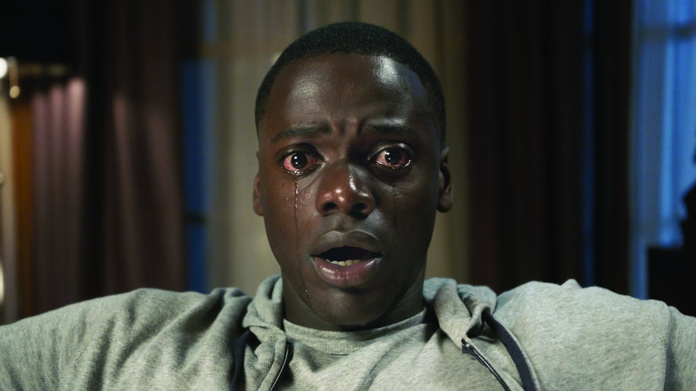
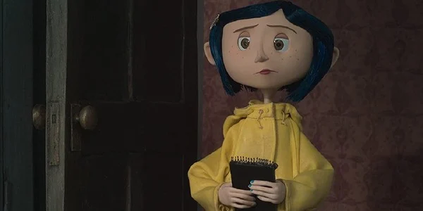
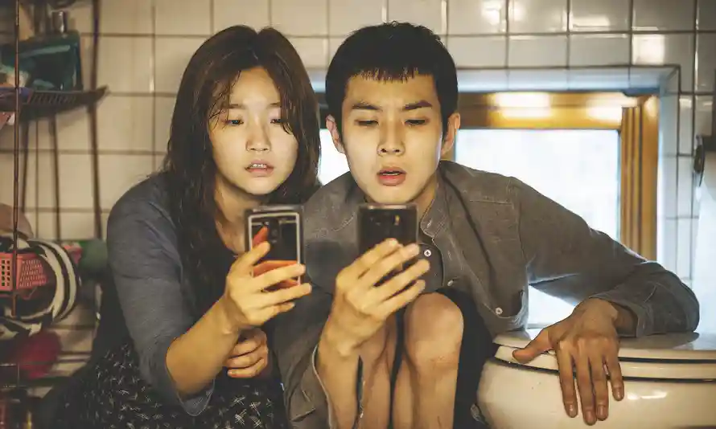

favorite films
this is the website version of a Google Doc I've been building on for the past year or so, listing all my favorite films with my own fun, spoiler-free reviews
animation
drama
horror/thriller
drama
Honey Boy (2019)

- autobiography
- rehabilitation and healing from childhood trauma, told from the perspective of screenwriter Shia laBeouf
Goodwill Hunting (1997)

- not exactly an untouched premise but
the characterization, witty dialogue, and
unexpectedly profound script make this film stand apart
- Robin Williams at his prime
Edge of Seventeen (2016)

- my comfort movie
- hilarious but heartfelt dialogue
- so funny but sometimes you're laughing and realize you're also crying
Lady Bird (2017)

- rare and real depiction of a mother and her daughter
- one of my favorite opening scenes in a movie
- Greta Gerwig's debut project and she killed it
The Social Network (2010)

- it's literally about the start of Facebook
- Aaron Sorkin's screenwriting at its peak imo
- Andrew Garfield is iconic in this
animation
Prince of Egypt (1998)

- God(with a capital G)-tier animation
- every shot is art
- the BEST. soundtrack of any animated film I've ever seen
How to Train Your Dragon (2010)

- family/adventure
- Toothless is very cute and their relationship makes me :(
- the industry's best depiction of man and beast comes in the form of flawless animation and breathtaking cinematography
Spirited Away (2001)

- fantasy/adventure
- unlike anything I've ever watched
- Studio Ghibli and Miyazaki at their best
- visually, sonically, and emotionally resounding
horror/thriller
Get Out (2017)

- written and directed by Jordan Peele of comedy duo Key&Peele
- basically Daniel Kaluuya showing off
- if racism was a satirical horror show: told in the most anxiety-inducing, unorthodox way possible
Coraline (2009)

- genre: nightmare fuel
- wikipedia still has this as a family movie but that's a lie
- scary beautiful
- stop-motion is so cool
Parasite (2019)

- 2019 Academy Awards Best Picture, first Asian/Korean film to win the title
- you can tell the director is a veteran; every frame has a purpose
- but it's also just plain entertaining
- best watched with minimal knowledge of the plot